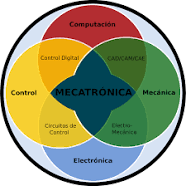

Mecatrónica
Autor:Areli Berenice Diaz Jimenez

¿Qué es la mecatrónica?
La mecatrónica es un área multidisciplinaria que combina tres ejes básicos: la ingeniería mecánica, la electrónica y la de sistemas. Comprende campos de estudio muy amplios y complejos, por lo que es un proceso de integración de tecnologías en sinergia cuya misión es mejorar productos, procesos o sistemas.